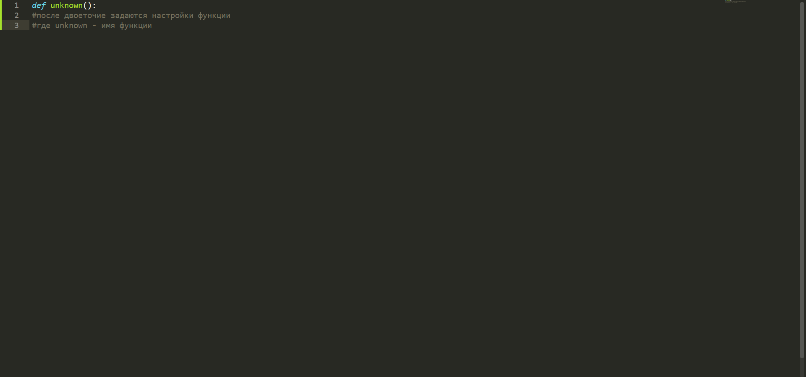
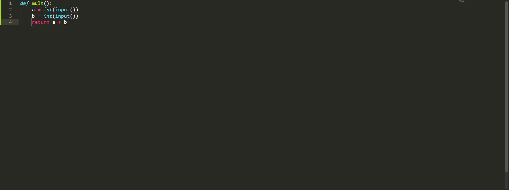

Готовы к новой теме в Python? Отлично! Сегодня мы с вами пройдём функции. Начнём по стандарту с определения функции в Python. Функция - это именованный блок кода, который можно вызвать из любой части программы. С определением вроде закончили. Теперь перейдём к практике. Функции создаются такм образом
Посмотрев и изучив фото внимательней, вы наверняка заметили серые строки со знаком # в начале. Эти строки называются комментариями. Комментарии - это способ игнорирования строки или строк в python(бывают однострочными и многострочными). А сейчас вернёмся к функциям. Решим такую задачу: мы должны создать функцию, которая может складывать два числа. Но дело в том, что просто так Python не сложит два числа, для этого в самом конце настроек функции нужно применить команду return, которая и поможет нам вернуть уже сложенное значение двух чисел(переменных). Не забываем также и про то, что число зачастую вводит сам пользователь, так что этот факт мы конечно учтём. Если вы прочитали эту главу и главу про ввод и вывод данных, то лёгко напишите эту функцию. Однако если вы ещё не догадались как решить эту задачу, то решение представлено на фото ниже.
И последний на сегодня вопрос, который наверняка у вас возник. Как же воспользоваться написанной функцией? Очень просто. Для этого достаточно написать имяфункции() в любом месте программы, где вы хотите ёё вызвать.
В этой теме вы разобрались с функциями: как создавать их, как ими пользоваться.